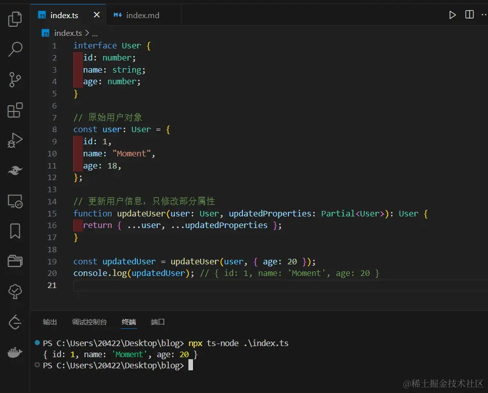

2024-07-10 11:12:09 · YinHao
TS 项目开发中，或多或少会遇到一些 TS 类型与类型之间需转换之处，这时你会怎么做。强大 TS 类型系统贴心的为开发者提供了部分常用的内置全局工具类型。
接下来的一系列文章我们将来学习一些这些内置的全局工具类型，首先登场的是：Partial。
Partial 是 TypeScript 提供的一个实用工具类型（Utility Type），用于将对象类型中的所有属性变为可选属性。它的定义如下：
它的应用场景主要有以下几个方面：
假设我们原来定义了一个类型接口，原本的全部都是必选的，但是我们是处理部分更新，那么它必然是全部都是可选的，那么这个时候就可以使用到 Partial 了
interface User {
id: number;
name: string;
age: number;
}
// 原始用户对象
const user: User = {
id: 1,
name: "Moment",
age: 18,
};
// 更新用户信息，只修改部分属性
function updateUser(user: User, updatedProperties: Partial<User>): User {
return { ...user, ...updatedProperties };
}
const updatedUser = updateUser(user, { age: 20 });
console.log(updatedUser); // { id: 1, name: 'Moment', age: 20 }
最终代码正常输出：
Partial 的实现基于 TypeScript 的映射类型（Mapped Types）和索引类型（Index Types）。
映射类型允许你创建一个新类型，这个新类型通过对旧类型的每个属性应用某种转换来生成。Partial 类型的实现如下：
type Partial<T> = {
[P in keyof T]?: T[P];
};
这里 P 是旧类型 T 的每个属性键，通过 keyof T 获取。对于每个属性键 P，新类型将其设为可选（通过 ?:），并且类型保持不变（T[P]）。
索引类型允许你获取对象类型的键，并使用这些键来索引对象类型。例如：
interface User {
id: number;
name: string;
age: number;
}
type UserKeys = keyof User; // 'id' | 'name' | 'age'
type UserIdType = User["id"]; // number
结合映射类型和索引类型，Partial 就可以实现将所有属性变为可选。
Partial 类型可以应用于更多复杂的场景，尤其是在结合其他 TypeScript 特性和工具类型时。例如，可以将其与递归类型、联合类型和条件类型结合使用，以处理更复杂的数据结构。
默认情况下，Partial 只会使第一层的属性变为可选。如果你有嵌套对象，需要让所有嵌套属性也变为可选，可以使用递归类型。
interface Address {
street: string;
city: string;
zipcode: string;
}
interface User {
id: number;
name: string;
address: Address;
}
// 递归地将所有嵌套属性变为可选
type DeepPartial<T> = {
[P in keyof T]?: T[P] extends object ? DeepPartial<T[P]> : T[P];
};
const user: DeepPartial<User> = {
id: 1,
address: {
city: "西安",
},
};
处理联合类型时，Partial 可以与条件类型结合使用，以确保所有可能的类型都变为可选。
interface Admin {
id: number;
name: string;
role: "admin";
}
interface RegularUser {
id: number;
name: string;
role: "user";
}
type UserType = Admin | RegularUser;
type PartialUserType<T> = T extends any ? Partial<T> : never;
const partialAdmin: PartialUserType<Admin> = {
name: "Moment",
};
const partialUser: PartialUserType<RegularUser> = {
role: "user",
};
可以创建更复杂的类型转换，通过条件类型和映射类型来处理不同类型的属性。
type RequiredKeys<T> = {
[K in keyof T]-?: {} extends { [P in K]: T[K] } ? never : K;
}[keyof T];
type OptionalKeys<T> = {
[K in keyof T]-?: {} extends { [P in K]: T[K] } ? K : never;
}[keyof T];
type DeepPartial<T> = T extends object
? { [K in keyof T]?: DeepPartial<T[K]> }
: T;
type DeepPartialOptional<T> = {
[K in RequiredKeys<T>]: DeepPartial<T[K]>;
} & {
[K in OptionalKeys<T>]?: DeepPartial<T[K]>;
};
interface Profile {
username: string;
email: string;
contact?: {
phone: string;
address?: {
street: string;
city: string;
};
};
}
type PartialProfile = DeepPartialOptional<Profile>;
const example1: PartialProfile = {
username: "Moment",
email: "moment@qq.com",
};
const example2: PartialProfile = {
username: "Moment",
email: "moment@qq.com",
contact: {
phone: "123-456-7890",
},
};
const example3: PartialProfile = {
username: "Moment",
email: "moment@qq.com",
contact: {
phone: "098-765-4321",
address: {
street: "中山大道",
city: "西安",
},
},
};
const example4: PartialProfile = {
username: "Moment",
email: "moment@qq.com",
contact: {
address: {
city: "西安",
},
},
};
const example5: PartialProfile = {
username: "Moment",
email: "moment@qq.com",
contact: {
address: {
street: "中山大道",
},
},
};
在上述的代码中主要实现了以下四个功能：
RequiredKeys<T>): 确定哪些属性是必需的。OptionalKeys<T>): 确定哪些属性是可选的。DeepPartial<T>): 对于嵌套的对象，递归地将所有属性设为可选。DeepPartialOptional<T>): 将必需属性保持原状并递归处理，将可选属性变为递归可选。通过这些技术组合，可以灵活地处理复杂类型，使得对象类型中的可选属性在多层嵌套中都能正确地处理。
你可以将 Partial 与其他实用工具类型一起使用，以实现更复杂的数据结构操作。例如，结合 Required 类型将某些属性变为必需，其他属性保持可选。
interface Product {
id: number;
name: string;
description?: string;
price: number;
}
type PartiallyRequired<T, K extends keyof T> = Required<Pick<T, K>> &
Partial<Omit<T, K>>;
const product: PartiallyRequired<Product, "id" | "name"> = {
id: 1,
name: "Moment",
};
在这个例子中，id 和 name 属性变为必需，其他属性保持可选。
这些更复杂的场景展示了 Partial 类型在处理嵌套对象、联合类型和条件类型时的强大功能。通过结合 TypeScript 的其他特性和工具类型，Partial 可以帮助你更灵活地处理各种复杂的数据结构和需求。
在实际应用中，通过使用这些高级类型可以更好地优化代码质量，让你的代码让人看得神清气爽。